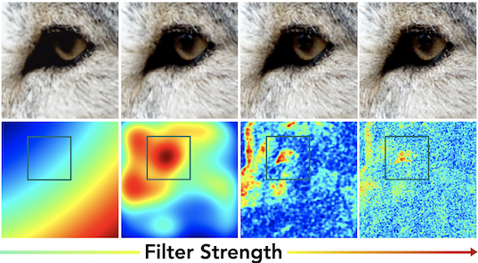
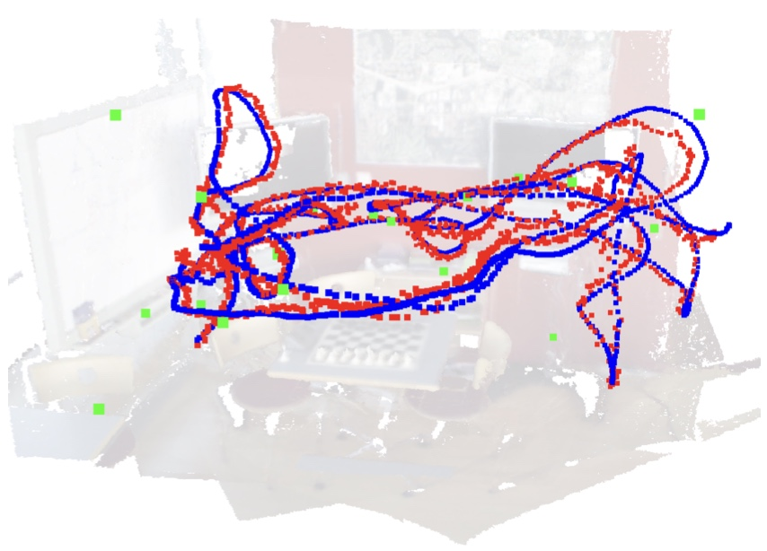

Yixin Zhuang 
Fuzhou University Email: yixin.zhuang@gmail.com |
I finished my undergraduate study at Nanjing University of Aeronautics and Astronautics and received my Ph.D. degree in Computer Science from National University of Defense Technology, China, under the supervision of Prof. Yueshan Xiong. During Ph.D, I spent two years at Washington University in St.Louis as visiting student advised by Prof. Tao Ju. Recently, I was a Boya Postdoctoral Researcher at Peking University, working with Prof. Baoquan Chen.
My research interest mainly includes geometric modeling and processing, 3D representation learning, and image based 3D reconstruction and localization.
Publications
|  |
Filtering In Neural Implicit Functions
Yixin Zhuang arXiv preprint Project Page | Paper | Code | |

|
Neural Implicit 3D Shapes from Single Images with Spatial Patterns
Yixin Zhuang, Yunzhe Liu, Yujie Wang, Baoquan Chen arXiv preprint Project Page | Paper | Code | |
|  |
Visual Localization via Few-Shot Scene Region Classification
Siyan Dong*, Shuzhe Wang*, Yixin Zhuang, Juho Kannala, Marc Pollefeys, Baoquan Chen International Conference on 3D Vision (3DV), 2022 Project Page | Paper | Code | |
|
PQ-NET: A Generative Part Seq2Seq Network for 3D Shapes
Rundi Wu, Yixin Zhuang, Kai Xu, Hao Zhang, Baoquan Chen Computer Vision and Pattern Recognition (CVPR), 2020 Project Page | Paper | Code | |

|
Multimodal Shape Completion via Conditional Generative Adversarial Networks
Rundi Wu*, Xuelin Chen*, Yixin Zhuang, Baoquan Chen European Conference on Computer Vision (ECCV), 2020 (Spotlight) Project Page | Paper | Code | |
|
Surface Remeshing with Robust User-guided Segmentation
Dawar Khan, Dong-Ming Yan, Fan Ding, Yixin Zhuang, Xiaopeng Zhang Computational Visual Media 2018 Paper | |
|
Feature-Aligned Segmentation using Correlation Clustering
Yixin Zhuang, Hang Dou, Nathan Carr, Tao Ju Computational Visual Media 2017 (Honorable Mentioned Award) Project Page | Paper | Excutable Demo | Code | |
|
Deformation-Driven Topology-Varying 3D Shape Correspondence
Ibraheem Alhashim, Kai Xu, Yixin Zhuang, Junjie Cao, Patricio Simari, Hao Zhang ACM Transaction on Graphics (SIGGRAPH Asia 2015) Project Page | Paper | Code | |
|
Anisotropic Geodesics for Live-wire Mesh Segmentation
Yixin Zhuang, Ming Zou, Nathan Carr, Tao Ju Computer Graphics Forum (Pacific Graphics 2014) Project Page | Paper | Excutable Demo | Code | Supplementary | |

|
A General and Efficient Method for Finding Cycles in 3D Curve Networks
Yixin Zhuang, Ming Zou, Nathan Carr, Tao Ju ACM Transaction on Graphics (SIGGRAPH Asia 2013) Project Page | Paper | Excutable Demo | Code | Supplementary | |